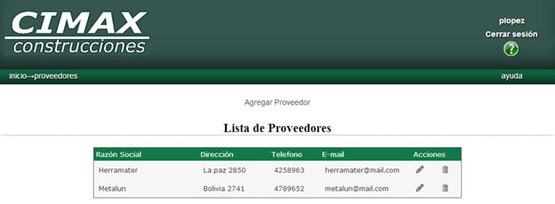
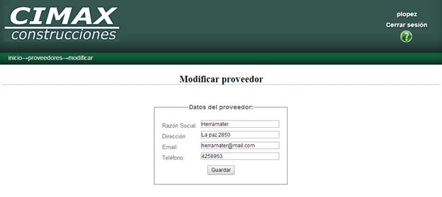
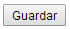
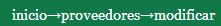
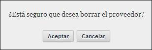
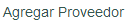
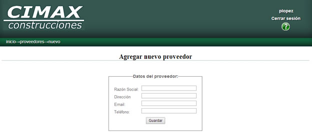
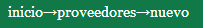

Proveedores
Al ingresar a la pantalla de proveedores, se le presentará la lista con los datos de los proveedores cargados en el sistema.

Para cada fila de la tabla, es decir, para cada proveedor, las opciones disponibles de edición o borrado se encuentran en la columna acciones 
Editar proveedores
Para realizar la edición, haga click en el icono del lápiz  al lado del proveedor que desea modificar.
al lado del proveedor que desea modificar.
Será conducido a una nueva pantalla donde se cargan automáticamente los datos del proveedor seleccionado.

En esta pantalla usted puede cambiar la razón social, dirección, mail, y/o teléfono.
Al finalizar la edición, con el botón  podrá hacer efectivos los cambios.
En el caso que desee cancelar la edición, puede acceder a la página anterior haciendo click sobre “proveedores” en la barra de navegación de la esquina superior izquierda 
Borrar proveedor
Para realizar la baja, haga click en el icono del cesto  al lado del proveedor que desea borrar.
al lado del proveedor que desea borrar.
Se le pedirá una confirmación antes de realizar la baja.

En caso que ya no quiera realizar el borrado, el botón cancelar lo llevara nuevamente a la lista de proveedores sin haber borrado el proveedor seleccionado.
En caso de aceptar, se borrará el proveedor de la lista, y será redirigido a la página actualizada de la lista de proveedores.
Agregar proveedor
Para agregar un nuevo proveedor, haga click en el vínculo en la mitad superior de la pantalla “Agregar proveedor” 
Será conducido a una nueva pantalla donde se encuentran los campos disponibles para cargar los datos del nuevo proveedor.
Razon social: ingrese la razón social del proveedor.
Dirección: ingrese la dirección del proveedor
Email: ingrese el email del proveedor
Teléfono: ingrese el teléfono del proveedor

Al finalizar la carga, con el botón  podrá hacer efectivos los cambios.
podrá hacer efectivos los cambios.
En el caso que desee cancelar el alta, puede acceder a la página anterior haciendo click sobre “proveedores” en la barra de navegación de la esquina superior izquierda 